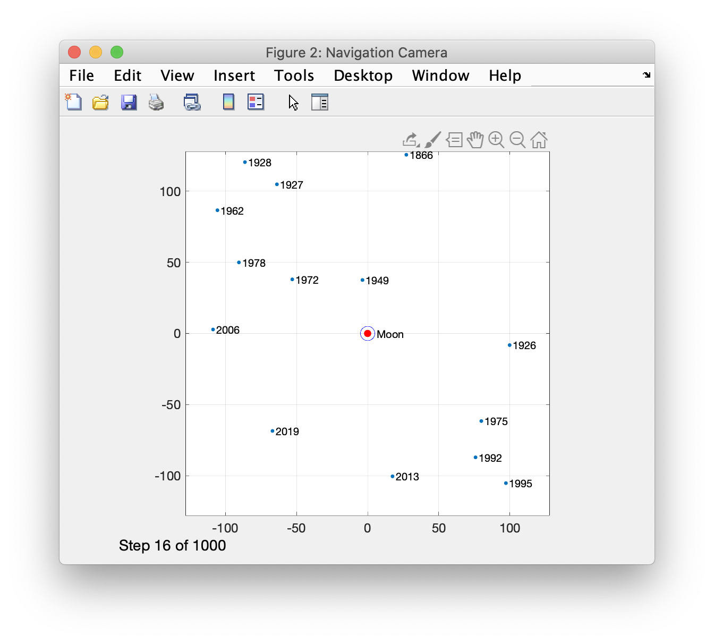
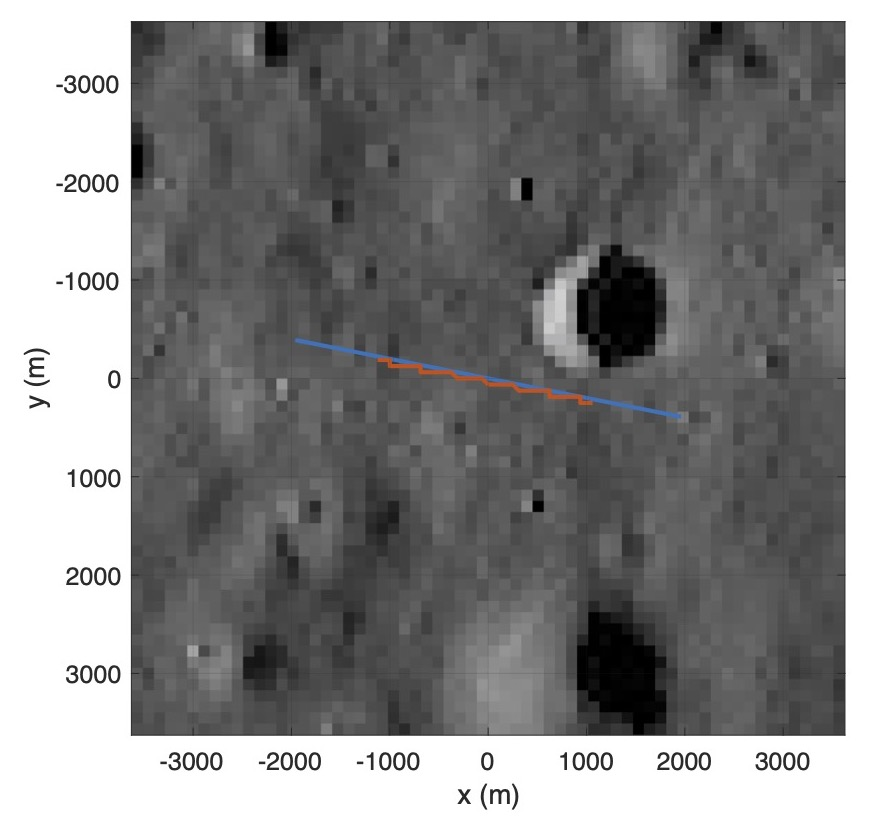

| Optical Navigation System Module |  |
This is the Optical Navigation System Module for the Spacecraft Control Toolbox. We at Princeton Satellite Systems thank you for your interest in our products. You can always find more information on this or any of our other products on our website: www.psatellite.com
Contents
Requirements
MATLAB 2019b at a minimum is required to run all of the functions. Most of the functions will run on previous versions but we are no longer supporting them. The Spacecraft Control Toolbox Professional Edition is required. In addition, the neural net features in ONS require the Deep Learning toolbox from MATLAB.
What's Included
The Optical Navigation System (ONS) is a flexible navigation system for deep space operations that does not require GPS measurements. The navigation solution is computed using an Unscented Kalman Filter (UKF) that can accept any combination of range, range-rate, planet chord width, landmark and angle measurements using any celestial object. The UKF employs a full nonlinear dynamical model of the orbit including gravity models and disturbance models. The package also includes attitude determination algorithms using the UKF algorithm with the IMU. This makes the sensor a more capable plug-in replacement for a star tracker thus reducing the integration and test cost of adding this sensor to a spacecraft. The IMU is used as the dynamical base for the attitude determination algorithms. That is, the gyros model is propagated, not the spacecraft model. The linear accelerometers are used to measure forces on the spacecraft. This permits accurate measurement of the accelerations applied by thrusters during maneuvers.
This figure shows the moon at the boresight of the navigation camera. The stars used for angle measurements are visible.

This chart shows the true track and track from the neural network.

The Optical Navigation Module comes with complete demonstrations of optical navigation in Earth orbit, cis-lunar space, during lunar landings and in deep space. Unscented Kalman Filter and Extended Kalman Filter functions are used to implement your estimator. Both recursive and single frame solutions are available. ONS can be integrated with the toolboxes stellar attitude determination system for a complete attitude and position determination solution. The toolboxes include ephemerides for the planets and asteroids making it easy to simulate any mission. The toolbox also includes neural networks for two-dimension position determination using images.
Installation
See the Spacecraft Control Toolbox help for general installation instructions. The folders of this Module need to be added to your path. It does not need to reside in a special place on your computer relative to your other toolboxes or modules.
Demos
The "Other Demos" or "Examples" section of MATLAB help has all the published demos for this module. Each demo is gone through step by step and evaluated cell by cell as you go down the m-file. This also contains a hierarchical structure that allows you to browse through each demo via webpage.
Functions
This section contains the description headers to every single function in the module. It is fully searchable as well in case you are ever looking for a particular function. It is grouped together by modules.